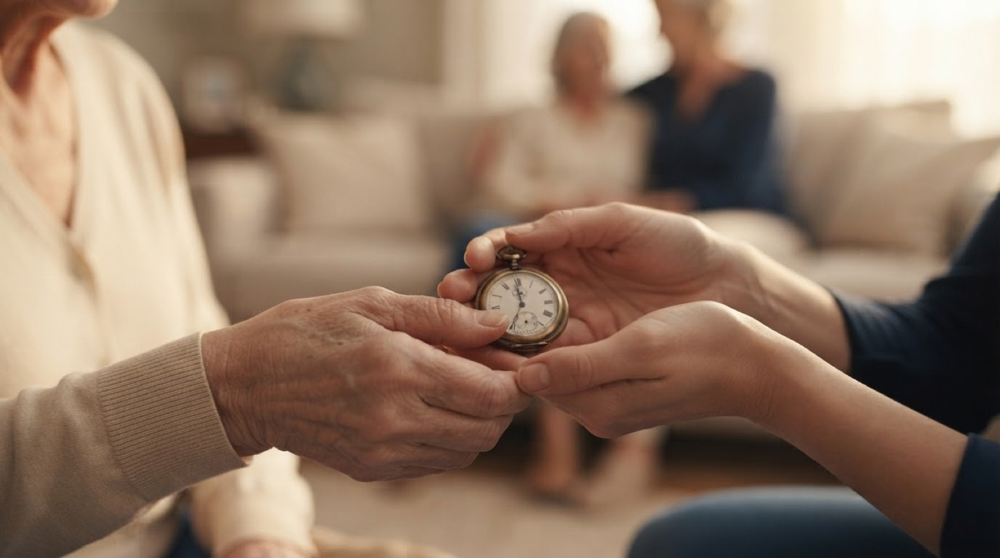

Davantage que de l'argent ou des biens : une mémoire sous toutes ses formes — photos, vidéos, mots — que vous seul(e) décidez de partager.
À vos proches, à une cause, à une communauté. De votre vivant, après, ou jamais. Vous décidez quoi, à qui, et quand — et vous restez libre de tout modifier à tout moment, de votre vivant. Les conditions sont définies en rendez-vous visio avec un notaire partenaire et notre responsable technique.
Famille, amis, contacts : les personnes qui pourront recevoir tout ou partie de votre histoire. Remplissez quand vous voulez, ou jamais. Facultatif.
Votre histoire peut éclairer au-delà des vôtres. Une association qui vous a accompagné(e) toute une vie ; une école, un musée, des archives locales, votre commune. Le récit d'un engagement, un message aux bénévoles de demain, la mémoire d'un métier, l'histoire d'un village.
Depuis toujours, les notaires gardent ce que les familles ont de plus précieux : testaments, actes, dernières volontés. InfiniVita s'inscrit dans cette tradition. Votre clé de chiffrement peut être déposée chez le notaire de votre choix, sous scellé, avec vos instructions de transmission (offre 4 — La Transmission). Le jour venu, c'est lui — et lui seul — qui la remettra à vos proches.
Aucune entreprise, aucune IA, aucun serveur ne décide de votre transmission. Un officier public, oui.
Un jour, vos proches pourront réentendre vos mots — les vôtres, exactement, jamais inventés.
Le jumeau numérique d'InfiniVita est un écho conversationnel nourri uniquement de ce que vous avez confié : vos textes, votre voix si vous le souhaitez. Il est encadré par un comité éthique et n'est jamais activé sans votre décision écrite. Il fait partie de la transmission, car c'est un legs comme un autre : c'est vous qui décidez s'il existera, pour qui, et pour combien de temps.
Le jumeau numérique restitue vos mots, votre voix, vos textes. Il est votre écho — jamais votre remplaçant.
Rendez-vous visio avec un notaire partenaire et notre responsable technique. Le jumeau numérique est une option de l'offre 4 — La Transmission, présentée uniquement sur devis.